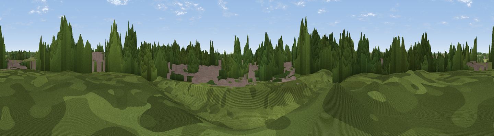

Billing Hill
#43580 in England · top 84% of its area beats it · near OverstoneWhere it is
The exact computed spot (SP 80644 64633). Click the marker for map links.
The view, rendered

A 360° render of this exact spot computed from the terrain model, tree cover and land cover — summer colours, afternoon light, calibrated against photographs of famous viewpoints. Real trees, hedges and buildings will differ in detail.
The panorama
Grey silhouette: terrain skyline in each direction (720 bearings, Earth curvature and refraction included). Dashed green: skyline with trees (+15 m) and buildings (+8 m) as obstacles. Blue strip: how far the ground is visible on each bearing.
Where the view opens
Wedge length = distance to the farthest visible ground on that bearing (vegetation-aware). Rings at 10, 25 and 50 km.
What fills the view
41% woodland · 26% built-up · 19% grassland · 14% cropland
Angular shares of the visible panorama (visual magnitude), not map area. Landscape diversity 0.58 (0–1 Shannon).
Key numbers
More beautiful places nearby
The staircase of upgrades: each row has a higher view potential than everything closer. Driving times are estimates from straight-line distance, calibrated against real road routing — check an actual route before setting out.
| Place | Direction | Drive | Score |
|---|---|---|---|
| Boughton Hill | W · 5 km | ~10 min | 19.9 |
| Marstan Hill | NNE · 7 km | ~14 min | 24.0 |
| Bramptons Hill | WNW · 9 km | ~18 min | 35.6 |
| Viewpoint near Finedon | ENE · 13 km | ~23 min | 44.8 |
| Viewpoint near Haselbech | NW · 15 km | ~27 min | 46.2 |
| Viewpoint near Cold Ashby | NW · 21 km | ~35 min | 61.7 |
| Big Hill - Staverton Clump | W · 26 km | ~42 min | 68.4 |
| Viewpoint near Northend | WSW · 43 km | ~62 min | 69.7 |
52.27395, -0.81951 · source: osm peak · position refined by local search. Computed location — check access rights before visiting.